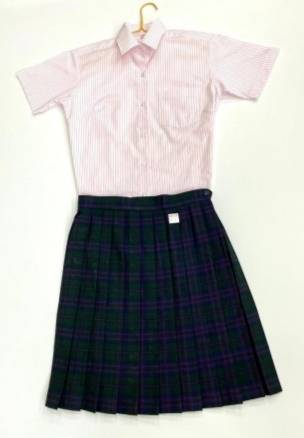
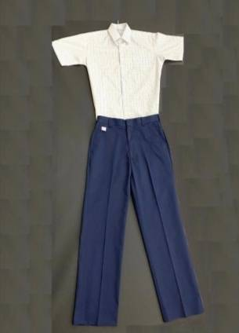
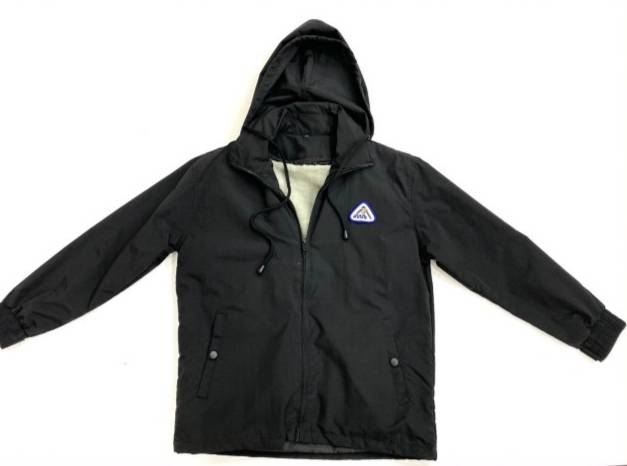
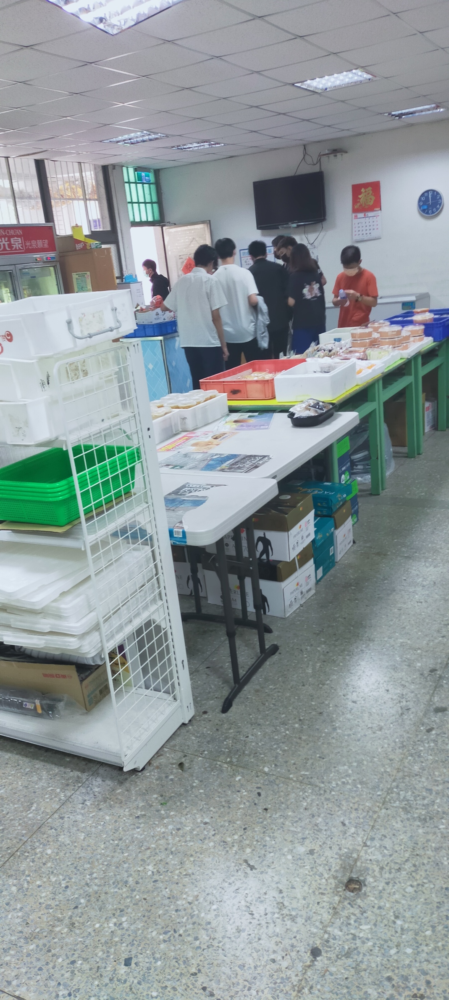
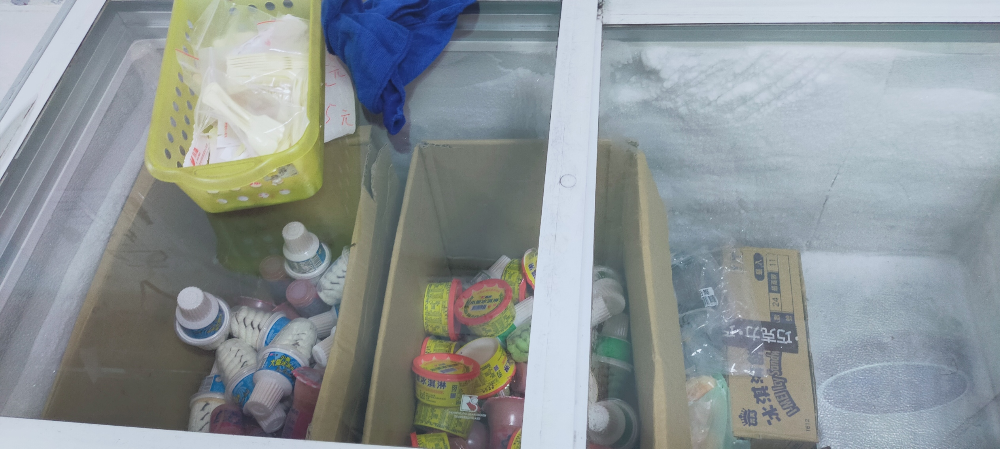
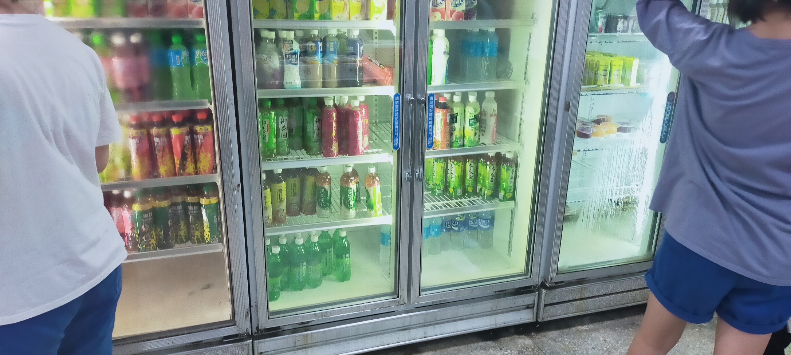
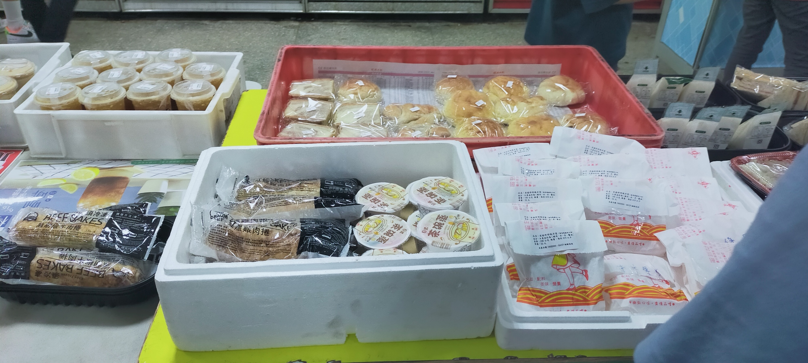
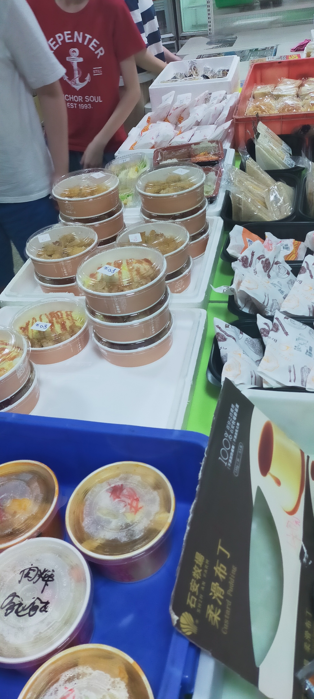
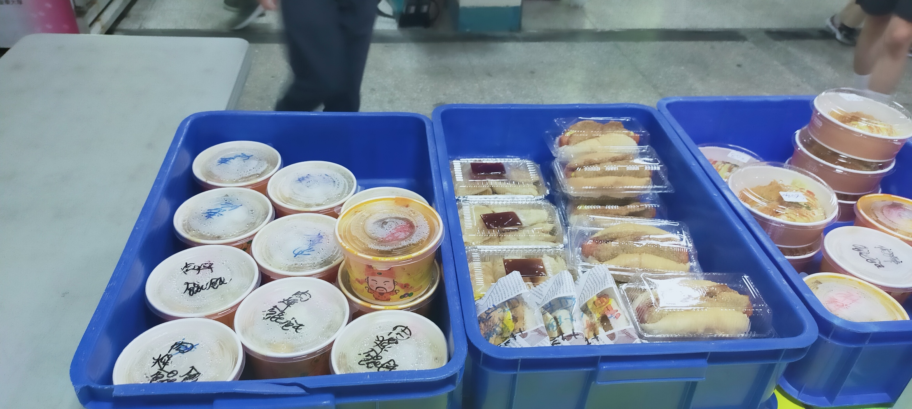

校門口&簡介

臺北市立復興高級中學是一所位於臺灣臺北市北投區的高級中學，創立於1953年
當時為省辦之「臺灣省立復興中學」，為中華民國政府在台創設之第一所中學，兼有高中部和初中部之完全中學
第一屆共招收高中3班、初中5班。
1968年因陽明山管理局北投鎮歸入台北市，該校改隸臺北市政府，改名為「臺北市立復興中學」。
1970年停辦初中部後，改制為「臺北市立復興高級中學」。
自1997年起，除招收各年級15班普通班外，配合市政府建立藝術高中之政策，開始招收藝術才能班（美術、音樂、戲劇、舞蹈）及體育班各一班，成為特色之一。
2008年獲准成立「人文史地教育實驗班」，並開始招生。
以及近年成立的英語資優班、數學資優班、數位藝術設計班、財經法律班等特殊班。
於1999年與日本沖繩縣宮古高等學校締結為姊妹校，並長期進行寄宿學生交流活動。
2017年與韓國釜一外語高校締結為姐妹校。
美美的校服
夏季運動服(女)
夏季運動服(男)
夏季制服(女)
夏季制服(男)
校服外套
合作社盛況
合作社是每個學生的美好天堂，
在口渴時可以來這裡買喝的，
肚子餓時可以來這裡買吃的，
午餐時間到了，也可以來這裡買午餐
這裡販賣著各式各樣、琳瑯滿目的商品
只為給學生最好的體驗
而每到午餐時間
也是這裡最為繁忙的時刻
 剛下課的人潮(因為我來得早，所以目前人比較少)
 夏天最愛的，就是吃了就令人舒爽的冰
 不喜歡吃冰也沒問題，這邊有整櫃的冰涼飲料
 再來就是中午最重要的午餐
 看著這些美味的餐點，口水都快流下來了呢
 當然也少不了這些
漂亮的操場
這裡是讓學生們盡情揮發青春汗水的場所
也是學生之間拿出全力互相比拚的場地
更是學生們互相玩樂、打鬧的遊樂場
在每一所學校哩，操場是必不可少的地方
唯有操場才能讓學生放下束縛，大膽地跑、跳、叫